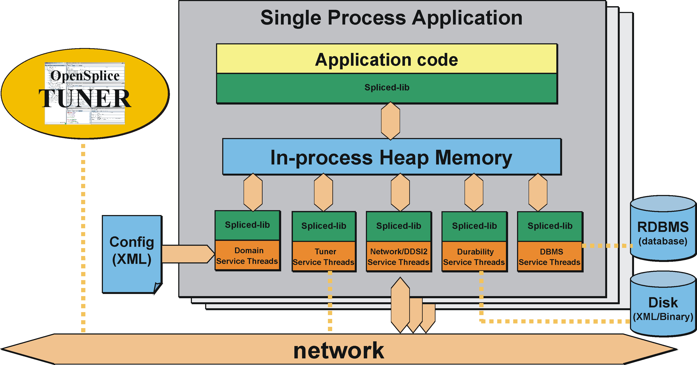

2. Overview¶
This chapter explains the Vortex OpenSplice middleware from a configuration perspective. It shows the different components running on a single node and briefly explains the role of each entity. Furthermore, it defines a reference system that will be used throughout the rest of the document as an example.
2.1. Vortex OpenSplice Architecture¶
Vortex OpenSplice is highly configurable, even allowing the architectural structure of the DDS middleware to be chosen by the user at deployment time.
Vortex OpenSplice can be configured to run using a so-called ‘federated’ shared memory architecture, where both the DDS related administration (including the optional pluggable services) and DDS applications interface directly with shared memory.
Alternatively, Vortex OpenSplice also supports a so-called ‘standalone’ single process architecture, where one or more DDS applications, together with the OpenSplice administration and services, can all be grouped into a single operating system process.
Both deployment modes support a configurable and extensible set of services, providing functionality such as:
- networking - providing QoS-driven real-time networking based on multiple reliable multicast ‘channels’
- durability - providing fault-tolerant storage for both real-time state data as well as persistent settings
- remote control and monitoring SOAP service - providing remote web-based access using the SOAP protocol from various Vortex OpenSplice tools
- dbms service - providing a connection between the real-time and the enterprise domain by bridging data from DDS to DBMS and vice versa
The Vortex OpenSplice middleware can be easily configured, on the fly, using its pluggable service architecture: the services that are needed can be specified together with their configuration for the particular application domain, including networking parameters, and durability levels for example).
There are advantages to both the single process and shared memory deployment architectures, so the most appropriate deployment choice depends on the user’s exact requirements and DDS scenario.
2.1.1. Single Process architecture¶
This deployment allows the DDS applications and Vortex OpenSplice administration to be contained together within one single operating system process. This ‘standalone’ single process deployment option is most useful in environments where shared memory is unavailable or undesirable. As dynamic heap memory is utilized in the single process deployment environment, there is no need to pre-configure a shared memory segment which in some use cases is also seen as an advantage of this deployment option.
Each DDS application on a processing node is implemented as an individual, self-contained standalone operating system process (i.e. all of the DDS administration and necessary services have been linked into the application process). This is known as a single process application. Communication between multiple single process applications co-located on the same machine node is done via the (loop-back) network, since there is no memory shared between them. An extension to the single process architecture is the option to co-locate multiple DDS applications into a single process. This can be done be creating application libraries rather than application executables that can be ‘linked’ into the single process in a similar way to how the DDS middleware services are linked into the single process. This is known as a single process application cluster. Communication between clustered applications (that together form a single process) can still benefit from using the process’s heap memory, which typically is an order of magnitude faster than using a network, yet the lifecycle of these clustered applications will be tightly coupled.
The Single Process deployment is the default deployment architecture provided within Vortex OpenSplice and allows for easy deployment with minimal configuration required for a running DDS system.
The diagram The Vortex OpenSplice Single Process Architecture shows an overview of the single process architecture of Vortex OpenSplice.
The Vortex OpenSplice Single Process Architecture
{kind=link}
{kind=link}
2.1.3. Comparison of Deployment Architectures¶
Simple when sufficient, Performant when required
The choice between the ‘federated’ or ‘standalone’ deployment architecture is basically about going for out-of-the-box simplicity or for maximum performance:
Federated Application Cluster
- Co-located applications share a common set of pluggable services (daemons)
- Resources (e.g. memory/networking) are managed per ‘federation’
- Added value: performance (scalability and determinism)
Federated Application Cluster
{kind=link}
Non-federated, `single process’ Applications
- Each application links the required DDS services as libraries into a standalone ‘single process’
- Resources are managed by each individual application
- Added value: Ease-of-use (‘zero-configuration’, middleware lifecycle is simply coupled to that of the application process)
Non-federated, single-process Applications
{kind=link}
2.1.4. Configuring and Using the Deployment Architectures¶
The deployment architecture choice between a shared-memory federation or a standalone ‘single process’ is a runtime choice driven by a simple single configuration parameter in the domain configuration xml file:
<SingleProcess>true</SingleProcess>
Note that there is absolutely no need to recompile or even re-link an application when selecting or changing the deployment architecture.
NOTE for VxWorks kernel mode builds of OpenSplice the single process feature of the OpenSplice domain must not be enabled. i.e. “<SingleProcess>true</SingleProcess>” must not be included in the OpenSplice Configuration xml. The model used on VxWorks kernel builds is always that an area of kernel memory is allocated to store the domain database ( the size of which is controlled by the size option in the Database configuration for OpenSplice as is used on other platforms for the shared memory model. ) This can then be accessed by any task on the same VxWorks node.
The deployment modes can be mixed at will, so even on a single computing node, one could have some applications that are deployed as a federation as well as other applications that are deployed as individual ‘single processes’.
To facilitate the ‘out-of-the-box’ experience, the default ospl.xml configuration file specifies the standalone ‘single process’ deployment architecture where the middleware is simply linked as libraries into an application: no need to configure shared-memory, no need to ‘fire up’ Vortex OpenSplice first to start the related services. The middleware lifecycle (and with that the information lifecycle) is directly coupled to that of the application.
When, with growing system scale, scalability and determinism require efficient sharing of memory and networking resources, the deployment architecture can be switched easily to the federated archtirecture; thereafter the middleware and application(s) lifecycles are decoupled and a single set of services facilitate the federation of applications with regard to scheduling data transfers over the wire (based upon the actual importance and urgency of each published data-sample), maintaining data for late joining applications (on the same or other nodes in the system) and efficient (single-copy) sharing of all data within the computing node regardless of the number of applications in the federation.
The Vortex OpenSplice distribution contains multiple example configuration files that exploit both deployment architectures. Configurations that exploit the single-process architecture start with ospl_sp_ whereas federated-deployment configurations start with ospl_shmem_.
2.2. Vortex OpenSplice Usage¶
The Vortex OpenSplice environment has to be set up to instruct the node where executables and libraries can be found in order to be able to start the Domain Service.


On UNIX-like platforms this can be realized by starting a shell and sourcing the release.com file located in the root directory of the Vortex OpenSplice installation:
% . ./release.com

On the Windows platform the environment must be set up by running release.bat, or else the Vortex OpenSplice Command Prompt must be used.
2.2.1. Starting Vortex OpenSplice for a Single Process Deployment¶
For ‘standalone’ single process deployment, there is no need to start the Vortex OpenSplice middleware before starting the DDS application, since the application itself will implicitly start the library threads of Vortex OpenSplice Domain Service and associated services at the point when the DDS create_participant operation is invoked by the standalone application process.
2.2.2. Starting Vortex OpenSplice for a Shared Memory Deployment¶
For a shared memory deployment, it is necessary to start the Vortex OpenSplice Domain Service prior to running a DDS application. The ospl command-tool is provided to manage Vortex OpenSplice for shared memory deployments. To start Vortex OpenSplice in this way, enter:
% . ./release.com
This will start the Domain Service using the default configuration.

NOTE: The Integrity version of Vortex OpenSplice does not include the ospl program. Instead there is a project generator, ospl_projgen, which generates projects containing the required address spaces which will auto-start when loaded. Please refer to the Getting Started Guide for details.

NOTE: The VxWorks version of Vortex OpenSplice does not include the ospl program. Please refer to the Getting Started Guide for details of how to use VxWorks projects and Real Time Processes to deploy Vortex OpenSplice applications.
2.2.3. Monitoring¶
The Vortex OpenSplice Domain Service can be monitored and tuned in numerous ways after it has been started. The monitoring and tuning capabilities are described in the following subsections.
2.2.3.1. Diagnostic Messages¶
Vortex OpenSplice outputs diagnostic information. This information is written to the ospl-info.log file located in the start-up directory, by default. Error messages are written to the ospl-error.log file, by default. The state of the system can be determined from the information written into these files.
The location where the information and error messages are stored can be overridden by setting the OSPL_LOGPATH environment variable to a location on disk (by specifying a path), to standard out (by specifying <stdout>) or to standard error (by specifying <stderr>). The names of these log files can also be changed by setting the OSPL_INFOFILE and OSPL_ERRORFILE variables.
Vortex OpenSplice also accepts the environment properties OSPL_VERBOSITY and OSPL_LOGAPPEND. These provide an alternate method of specifying values for Attribute append and Attribute verbosity of the Domain/Report configuration element (see the Configuration section for details).

Values specified in the domain configuration override the environment values.
2.2.3.2. Vortex OpenSplice Tuner¶
The intention of Vortex OpenSplice Tuner, ospltun, is to provide facilities for monitoring and controlling Vortex OpenSplice, as well as the applications that use OpenSplice for the distribution of data. The Vortex OpenSplice Tuner User Guide specifies the capabilities of Vortex OpenSplice Tuner and describes how they should be used.
Note that the Tuner will only be able to connect to the memory running in a particular DDS Domain by being run on a node that is already running Vortex OpenSplice using the shared memory deployment mode.
The Tuner will also be able to monitor and control a Domain running as a single process if the Tuner itself is started as the single process application with other DDS applications clustered in the process by being deployed as a single process application cluster. Please refer to the Vortex OpenSplice Tuner User Guide for a description of how to cluster applications together in a single process.
2.2.3.3. Vortex OpenSplice Memory Management Statistics Monitor¶
The Vortex OpenSplice Memory Management Statistics Tool, mmstat, provides a command line interface that allows monitoring the status of the nodal shared administration (shared memory) used by the middleware and the applications. Use the help switch (mmstat -h) for usage information. Please refer to the Tools chapter for detailed information about mmstat.

Please note that mmstat is only suitable for diagnostic purposes, and its use is only applicable in shared memory mode.
2.2.4. Stopping Vortex OpenSplice¶
2.2.4.1. Stopping a Single Process deployment¶
When deployed as a single process, the application can either be terminated naturally when the end of the main function is reached, or stopped prematurely by means of a signal interrupt, for example Ctrl-C. In either case, the Vortex OpenSplice middleware running within the process will be stopped and the process will terminate.
2.2.4.2. Stopping a Shared Memory deployment¶
In shared memory deployment mode, the Vortex OpenSplice Domain Service can be stopped by issuing the following command on the command-line.
% ospl stop
The Vortex OpenSplice Domain Service will react by announcing the shutdown using the shared administration. Applications will not be able to use DDS functionality anymore and services will terminate elegantly. Once this has succeeded, the Domain Service will destroy the shared administration and finally terminate itself.
2.2.4.2.1. Stopping OSPL by using signals¶
Alternatively the Vortex OpenSplice domain service can also be stopped by sending a signal to the ospl process, assuming the process was started using the -f option.

For example, on Unix you could use the following command to send a termination signal to the ospl tool, where <pid> identifies the ospl tool pid:
% kill –SIGTERM <pid>
Sending such a signal will cause the ospl tool to exit gracefully, properly terminating all services and exiting with returncode 0.
The following table shows a list of all POSIX signals and what the behavior of OSPL is when that signal is sent to the ospl tool.
| Signal | Default action | OSPL action | Description |
|---|---|---|---|
| SIGHUP | Term. | Graceful exit | Hang up on controlling process |
| SIGINT | Term. | Graceful exit | Interrupt from keyboard |
| SIGQUIT | Core | Graceful exit | Quit from keyboard |
| SIGILL | Core | Graceful exit | Illegal instruction |
| SIGABRT | Core | Graceful exit | Abort signal from abort function |
| SIGFPE | Core | Graceful exit | Floating point exception |
| SIGKILL | Term. | Term. | Kill signal (can’t catch, block, ignore) |
| SIGSEGV | Core | Graceful exit | Invalid memory reference |
| SIGPIPE | Term. | Graceful exit | Broken pipe: write to pipe with no readers |
| SIGALRM | Term. | Graceful exit | Timer signal from alarm function |
| SIGTERM | Term. | Graceful exit | Termination signal |
| SIGUSR1 | Term. | Graceful exit | User defined signal 1 |
| SIGUSR2 | Term. | Graceful exit | User defined signal 2 |
| SIGCHLD | Ignore | Ignore | A child process has terminated or stopped |
| SIGCONT | Ignore | Ignore | Continue if stopped |
| SIGSTOP | Stop | Stop | Stop process (can’t catch, block, ignore) |
| SIGTSTOP | Stop | Graceful exit | Stop typed at tty |
| SIGTTIN | Stop | Graceful exit | Tty input for background process |
| SIGTTOUT | Stop | Graceful exit | Tty output for background process |
2.2.4.2.2. Stopping Applications in Shared Memory Mode¶
Applications that are connected to and use Vortex OpenSplice in shared memory mode must not be terminated with a KILL signal. This will ensure that Vortex OpenSplice DDS shared memory always remains in a valid, functional state.
When Vortex OpenSplice applications terminate naturally, a cleanup mechanism is executed that releases any references held to the shared memory within Vortex OpenSplice which that application was using. This mechanism will be executed even when an application is terminated by other means (e.g. by terminating with Ctrl+C) or even if the application crashes in the user code.

The cleanup mechanisms are not executed when an application is terminated with a KILL signal. For this reason a user must not terminate an application with a kill -9 command (or, on Windows, must not use TaskManager’s End Process option) because the process will be forcibly removed and the cleanup mechanisms will be prevented from executing. If an application is killed in this manner, the shared memory regions of Vortex OpenSplice will become inconsistent and no recovery will then be possible other than re-starting Vortex OpenSplice and all applications on the node.
2.2.5. Deploying Vortex OpenSplice on VxWorks 6.x¶
The VxWorks version of Vortex OpenSplice does not include the ospl program. Please refer to the Getting Started Guide for details of how to use VxWorks projects and Real Time Processes to deploy Vortex OpenSplice applications.
2.2.6. Deploying Vortex OpenSplice on Integrity¶
The Integrity version of Vortex OpenSplice does not include the ospl program. Instead there is a project generator, ospl_projgen, which generates projects containing the required address spaces which will auto-start when loaded. Please refer to the Getting Started Guide for detailed information about Vortex OpenSplice deployment on Integrity.
2.2.7. Installing/Uninstalling the Vortex OpenSplice C# Assembly to the Global Assembly Cache¶
The installer for the commercial distribution of Vortex OpenSplice includes the option to install the C# Assembly to the Global Assembly Cache during the installation process. If you chose to omit this step, or you are an open source user, then you should follow the instructions in the next few paragraphs, which describe how to manually install and uninstall the assembly to the Global Assembly Cache.
2.2.7.1. Installing the C# Assembly to the Global Assembly Cache¶
To install an assembly to the Global Assembly Cache, you need to use the gacutil.exe tool. Start a Visual Studio command prompt and type:
% gacutil /i <Vortex OpenSplice installation path>\bin\dcpssacsAssembly.dll
where <Vortex OpenSplice installation path> is the installation path of the Vortex OpenSplice distribution. If you are successful you will see a message similar to the following:
% C:\Program Files\Microsoft Visual Studio 9.0\VC>gacutil.exe /i
"C:\Program Files \PrismTech\VortexOpenSplice\V6.6.0\HDE\x86.win32\
bin\dcpssacsAssembly.dll"
%
% Microsoft (R) .NET Global Assembly Cache Utility. Version
3.5.30729.1
% Copyright (c) Microsoft Corporation. All rights reserved.
%
% Assembly successfully added to the cache
%
% C:\Program Files\Microsoft Visual Studio 9.0\VC>
2.2.7.2. Uninstalling the C# Assembly from the Global Assembly Cache¶
To uninstall an assembly from the Global Assembly Cache, you need to use the gacutil.exe tool. Start a Visual Studio command prompt and type:
% gacutil /u dcpssacsAssembly,Version=<version_number_goes_here>
The version number of the assembly is defined in the <Vortex OpenSplice installation path>\etc\RELEASEINFO file, in the CS_DLL_VERSION variable.
If you are successful you will see a message similar to the following:
% C:\Program Files\Microsoft Visual Studio 9.0\VC>gacutil /u
dcpssacsAssembly,Version=5.1.0.14734
% Microsoft (R) .NET Global Assembly Cache Utility. Version
3.5.30729.1
% Copyright (c) Microsoft Corporation. All rights reserved.
%
% Assembly: dcpssacsAssembly, Version=5.1.0.14734,
Culture=neutral, PublicKeyToken=5b9310ab51310fa9,
processorArchitecture=MSIL
% Uninstalled: dcpssacsAssembly, Version=5.1.0.14734,
Culture=neutral, PublicKeyToken=5b9310ab51310fa9,
processorArchitecture=MSIL
% Number of assemblies uninstalled = 1
% Number of failures = 0
%
% C:\Program Files\Microsoft Visual Studio 9.0\VC>

If you do not specify a version to the uninstall option, then all installed Vortex OpenSplice C# Assemblies in the GAC called dcpssacsAssembly will be removed from the GAC, so take care with this option as it can adversely affect any deployed applications that rely on other versions of these assemblies.
We strongly recommend that every time you uninstall an Vortex OpenSplice C# Assembly you specify the version you want to uninstall.
2.3. Vortex OpenSplice Configuration¶
Each application domain has its own characteristics; Vortex OpenSplice therefore allows configuring a wide range of parameters that influence its behaviour to be able to achieve optimal performance in every situation. This section describes generally how to instruct Vortex OpenSplice to use a configuration that is different from the default. This requires the creation of a custom configuration file and an instruction to the middleware to use this custom configuration file.
2.3.1. Configuration Files¶
Vortex OpenSplice expects the configuration to be defined in the XML format. The expected syntax and semantics of the configuration parameters will be discussed further on in this document. Within the context of Vortex OpenSplice, a reference to a configuration is expressed in the form of a Uniform Resource Identifier (URI). Currently, only file URIs are supported (for example, file:///opt/ospl/config/ospl.xml).
When Vortex OpenSplice is started, the Domain Service parses the configuration file using the provided URI. According to this configuration, it creates the DDS administration and initialises it. After that, the Domain Service starts the configured services. The Domain Service passes on its own URI to all services it starts, so they will also be able to resolve their configuration from this resource as well. (Of course, it is also possible to configure a different URI for each of the services, but usually one configuration file for all services will be the most convenient option.) The services will use default values for the parameters that have not been specified in the configuration.
2.3.2. Environment Variables¶
The Vortex OpenSplice middleware will read several environment variables for different purposes. These variables are mentioned in this document at several places. To some extent, the user can customize the Vortex OpenSplice middleware by adapting the environment variables.
When specifying configuration parameter values in a configuration file, environment variables can be referenced using the notation ${VARIABLE}. When parsing the XML configuration, the Domain Service will replace the symbol with the variable value found in the environment.
2.3.2.1. The OSPL_URI environment variable¶
The environment variable OSPL_URI is a convenient mechanism to pass the configuration file to the Domain Service and DDS applications. The variable will refer to the default configuration that comes with Vortex OpenSplice but of course can be overridden to refer to a customer configuration.
For single process mode operation this variable is required; see also Single Process architecture in this Guide, and the detailed description of the Element //OpenSplice/Domain/SingleProcess in the Configuration section.


On Linux/Unix-based platforms, this variable can be initialized by sourcing the release.com script that is created by the Vortex OpenSplice installer.

On Windows platforms, this variable may already be initialized in your environment by the Windows installer. Alternatively, it can be set by executing the supplied release.bat script or the Vortex OpenSplice Command Prompt.
2.3.3. Configuration of Single Process deployment¶
A single process deployment is enabled when the OSPL_URI environment variable refers to an XML configuration containing the <SingleProcess> attribute within the Domain section (//OpenSplice/Domain/SingleProcess). See the Configuration section for full details. In such a deployment, each Vortex OpenSplice service including the Domain Service will be started as threads within the existing application process.
In this case there is no need to start the Vortex OpenSplice administration manually since this is implicitly handled within the DDS code when the application first invokes the DDS create_participant operation. Since the OSPL_URI environment variable describes the Vortex OpenSplice system, there is no requirement to pass any Vortex OpenSplice configuration parameters to the application.
2.3.5. Temporary Files¶
Please note that for a shared memory deployment, Vortex OpenSplice uses temporary files that are used to describe the shared memory that has been created. The exact nature of these files varies according to the operating system; however, the user does not need to manipulate these files directly.


On Linux systems the location of the temp files is /tmp by default, while on Windows the location is the value of the TEMP (or TMP if TEMP is not set) environment variable. These locations can be over-ridden, if required, by setting the OSPL_TEMP variable to a location on disk by specifying a path. Please note, however, that this must be consistent for all environments on a particular node.
2.4. Applications which operate in multiple domains¶
Vortex OpenSplice can be configured to allow a DDS application to operate in multiple domains.

Please note that an application operating in multiple domains is currently only supported in shared memory deployments.
In order to achieve multi-domain operation, the host node for the application must run Vortex OpenSplice instances for every domain in which applications on that node will interact. For example, if an application A wants to operate in domains X, Y and Z then the node on which application A operates must run appropriate services for X, Y and Z.
Vortex OpenSplice utilises shared memory regions for intra-node communication. Each domain running on a node must have its own shared memory region, and subsequently the shared memory region for each domain that an application wants to operate within must be mapped into that application’s virtual address space. The mapping must occur at a virtual address in memory that is common to both the Vortex OpenSplice daemon (and any services) for that domain and the application itself. This requires some thought when configuring multiple Vortex OpenSplice domains on a single node. Care must be taken to ensure that the XML configuration files contain unique and non-overlapping addresses for the shared memory mapping (please also see the description of the XML element //OpenSplice/Domain/Database/Address in the Configuration section).
When designing and coding applications, care must also be taken with regard to usage of the default domain. If a domain is not explicitly identified in the application code, then appropriate steps must be taken at deployment in order to ensure that applications operate in the domain they were intended to.
2.4.1. Interaction with a Networking Service¶
Where multiple domains are running on a single node, each domain must run its own instance of a networking service if that domain is to participate in remote communication.
- Each domain should have its own pre-determined port numbers configured in the XML for that domain.
- These port numbers must be common for that domain across the system.
2.5. Time-jumps¶
Observed time discontinuities can affect data ordering and processing of middleware actions. Time-jumps can be caused by adjusting the clock forward or backward. When resuming from being suspended, time will seem to have jumped forward as if the clock was advanced.
2.5.1. Effect on data¶
When a sample is published, a time stamp is determined at the source which is attached to the sample before it is sent. The subscriber stores the time stamp at which the sample is received in the sample as well. In DDS samples are ordered within the history of an instance based on either the source time stamp or the reception
time stamp. This is controlled by means of the DestinationOrderQosPolicy.
The HistoryQosPolicy controls how many historic samples are stored in a reader. By default, a DataReader has a KEEP_LAST history with a depth of 1. This means that only the ‘last’ (based on the ordering defined by the DestinationOrderQosPolicy) sample for each instance is maintained by the middleware. When a sample is received by the subscriber, it determines whether and where to insert the sample in the history of an instance based on either the source
time stamp or the reception time stamp, potentially replacing an existing sample of
the instance.
- BY_SOURCE_ time stamp
- If samples are ordered by source time stamp and time is set back 1 hour on the subscriber node, nothing changes. If it is set back one hour on the publisher node, samples written after the time has changed have ‘older’ source time stamps and will therefore not overwrite the samples in the history from before the time changed.
- BY_RECEPTION_ time stamp
- If samples are ordered by destination time stamp and time is set back back 1 hour on the publisher node, nothing changes. If it is set back one hour on the subscriber node, samples delivered after the time has changed have ‘older’ reception time stamps and will therefore not overwrite the samples in the history from before the time changed.
2.5.2. Effect on processing¶
Processing of relative time actions, actions for which a time contract exists with local entities (e.g., inter-process leases, wait for attachment of a service) or time contracts involving remote parties (e.g., heartbeats, deadline) may not behave as expected when time is advanced discontinuously by an operator or when a system is suspended (e.g., hibernate or standby) and resumed. If the OS doesn’t support alternative clocks that aren’t influenced by this, the middleware may for example stop working because spliced doesn’t seem to have updated its lease on time, causing services/applications to conclude that spliced isn’t running anymore.
Also, timed waits may not have the expected duration; too short when time is advanced and too long when time is turned back. Modern Windows and Linux OS’s provide these alternative clocks. If the clocks are available, the middleware will use these to prevent the adverse effects of observed time-jumps on its processing.
2.5.3. Background information¶
The basic clock used for time stamps of data published in DDS is the real-time clock. This time is expressed as the time since the Unix epoch (00:00:00 on Thursday the 1st of January 1970, UTC). All systems support some form of a real-time clock. For most distributed systems that use time, the clocks on different nodes should have similar notions of time progression and because all systems try to keep track of the actual time as accurately as possible, the real-time clock is typically a very good distributed notion of time. If a machine is not synchronised with the actual time, correcting the offset will cause the real-time clock to become discontinuous. These discontinuities make it impossible even to track relative times, so this is where monotonic clocks are needed. However, not all systems have support for monotonic clocks with near real-time time progression.
The following clock-types are used by the middleware to cope with time discontinuities in processing of data, local leases and remote time based contracts if supported by the OS.
- Real-time clock
- This is the main clock used for time stamps on data and data-related actions. This time is typically kept close to the actual time by the OS by means of NTP or the like. This clock can also be provided by the customer through the `UserClock’ functionality (//OpenSplice/Domain/UserClockService is fully described in the Configuration section).
- Monotonic clock
- This is a clock that never jumps back and which provides a measure for the time a machine has been running since boot. When the time is adjusted, this clock will not jump forward or backward. This clock doesn’t include the time spent when a machine was suspended.
- Elapsed time clock
- This is also a monotonic clock, since it measures the elapsed time since some undefined, but fixed time. This clock is also not affected by adjusting the real-time clock, but it does include time the machine was suspended.
2.6. Time stamps and year 2038 limit¶
The DDS_Time_t time stamp definition contains a 32-bit second field with an epoch of 01-01-1970. As a result of this the second field is unable to represent a time after year 2038. From version 6.7 this problem is addressed by changing the second field to a 64-bit representation. For now this change is only done for CORBA C++ and CORBA Java and all internal DDS data structures. All other language bindings still use the 32-bit representation. Version 6.7 is fully compatible with older versions and will communicate by default in the 32-bit time representation with other nodes. If the domain/y2038Ready option is set, the node will use the new 64-bit second representation which makes it incompatible with older nodes prior to version 6.7. (//OpenSplice/Domain/y2038Ready is fully described in the Configuration section)
2.6.1. CORBA C++¶
By default the CORBA C++ library (dcpsccpp) that comes with OpenSplice is built with support for the 32-bit DDS_Time_t representation. To rebuild this library to get support for the new 64-bit DDS_Time_t representation please look at the OSPL_HOME/custom_lib/ccpp/README document which explains how to do this.
2.6.2. CORBA Java¶
By default the CORBA Java library (dcpscj.jar) that comes with OpenSplice is built with support for the 32-bit DDS_Time_t representation. A new library dcpscj_y2038_ready.jar is added which supports the new 64-bit DDS_Time_t representation. This library can be used when time stamps beyond year 2038 are needed.
2.6.3. Migration¶
- client-durability
- Users that use client-durability cannot use times beyond 2038. This is because the client durability protocol uses DDS_Time_t in 32-bit. Also, Lite and Cafe do not support 64-bit yet.
- DDS_Time_t in user data model
- Users that currently use DDS_Time_t in their user-defined data structures cannot migrate a running system. If they want to migrate, the complete system must be shut down and delete all storages containing the old 32-bit dds_time topics stored by the durability service. Rebuild the data models with the new 64-bit dds_time topics and restart the system. Running a mixed environment with old and new dds_time structures will result in topic mismatches.
- Record and Replay (RnR) service
- Users that use the Record and Replay service cannot use time beyond 2038. This is because the RnR service uses 32-bit times in the provided api.
- No client durability and no DDS_Time_t usage
Customers that do not use DDS_Time_t in their user-defined data structures AND do not use client durability can migrate in two steps:
- First update all nodes to minimal version 6.7 to be compatible with the 64-bit time stamps, but don’t set the domain/y2038Ready option
- If all nodes are running compatible versions, node by node can be changed to use 64-bit time stamps by setting the domain/y2038Ready option to true.
2.6.4. Platform support¶
- Linux 64-bit: On 64-bit platforms linux already supports 64-bit time. No action required.
- Linux 32-bit: On 32-bit platforms linux support for 64-bit time stamps is still in development. To provide y2038 safe time in GLIBC it is proposed that the user code defines _TIME_BITS=64 to get 64bit time support. When GLIBC sees _TIME_BITS=64 or when the system is 64bit it will set __USE_TIME_BITS64 to indicate that it will use 64bit time. Note that this is not yet supported. See: https://sourceware.org/glibc/wiki/Y2038ProofnessDesign?rev=83
- Windows: 64-bit time stamps are supported
NOTE: Network Time Protocol: (This is outside the scope of OpenSplice) When NTP is used then there may be a problem that the time stamp will rollover in 2036. This may not be an issue when version 4 of the NTP protocol is used which provides specification of an era number and era offset.
2.6.5. DDS_Time structure change¶
The new DDS_Time representation which contains a 64-bit second field:
module DDS {
struct Time_t {
long long sec;
unsigned long nanosec;
};
The original DDS_Time representation with a 32-bit second field:
module DDS {
struct Time_t {
long sec;
unsigned long nanosec;
};

Table Of Contents
- 2. Overview
- 2.1. Vortex OpenSplice Architecture
- 2.2. Vortex OpenSplice Usage
- 2.2.1. Starting Vortex OpenSplice for a Single Process Deployment
- 2.2.2. Starting Vortex OpenSplice for a Shared Memory Deployment
- 2.2.3. Monitoring
- 2.2.4. Stopping Vortex OpenSplice
- 2.2.5. Deploying Vortex OpenSplice on VxWorks 6.x
- 2.2.6. Deploying Vortex OpenSplice on Integrity
- 2.2.7. Installing/Uninstalling the Vortex OpenSplice C# Assembly to the Global Assembly Cache
- 2.3. Vortex OpenSplice Configuration
- 2.4. Applications which operate in multiple domains
- 2.5. Time-jumps
- 2.6. Time stamps and year 2038 limit